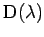

Inhalt Index DeskTop Bronstein

 Lineare Integralgleichungen Fredholmsche Integralgleichungen 2. Art Fredholmsche Lösungsmethode, Fredholmsche Sätze Fredholmsche Lösungsmethode
Lineare Integralgleichungen Fredholmsche Integralgleichungen 2. Art Fredholmsche Lösungsmethode, Fredholmsche Sätze Fredholmsche Lösungsmethode


Läßt man n gegen unendlich gehen, dann erhalten die Determinanten  und unendlich viele Zeilen und Spalten. Die Determinante
und unendlich viele Zeilen und Spalten. Die Determinante
wird benutzt, um den lösenden Kern (Resolvente) in der folgenden Form darzustellen:
(vgl. Konvergenz der NEUMANNschen Reihe). Es gilt die Aussage, daß alle Nullstellen von  Polstellen von sind. Gleichzeitig sind die  mit
mit  genau die Eigenwerte der Integralgleichung (11.15). In diesem Fall besitzt die homogene Integralgleichung nicht verschwindende Lösungen, die Eigenfunktionen zum Eigenwert
genau die Eigenwerte der Integralgleichung (11.15). In diesem Fall besitzt die homogene Integralgleichung nicht verschwindende Lösungen, die Eigenfunktionen zum Eigenwert  . Die Kenntnis der Resolvente ermöglicht, falls , eine explizite Lösungsdarstellung:
. Die Kenntnis der Resolvente ermöglicht, falls , eine explizite Lösungsdarstellung:
Zur Ermittlung der Resolvente nutzt man für die Funktionen und Potenzreihenentwicklungen bezüglich  :
:
Es ist dabei . Die weiteren Koeffizienten lassen sich aus folgenden Rekursionsformeln gewinnen:
| Beispiel A |
|
. |
| Beispiel B |
|
. |